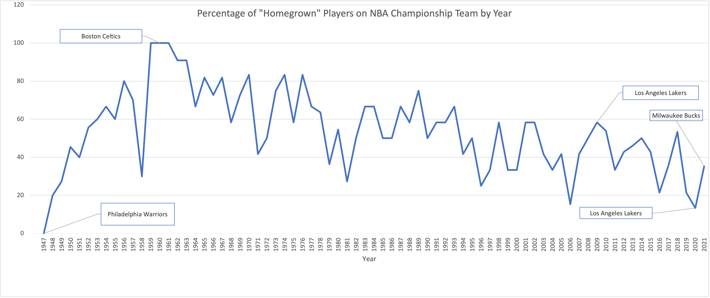

Are You Really Cheering for Clothes?
By Paloma Mertel | March 28, 2022

While the frequent movement of players between teams creates a dynamic environment within the league, it can make fans feel as though they are, in the words of Jerry Sinefield, cheering for clothes.
Many recent championship teams have been led to victory by players who were not acquired through their draft. Players such as LeBron James and Anthony Davis on the 2020 Los Angeles Lakers, Kawhi Leonard and Kyle Lowry on the 2019 Toronto Raptors, Kevin Durant on the 2017 and 2018 Warriors, James and Chris Bosh on the 2012 and 2013 Miami Heat and others have offered no shortage of store-bought talent within the finals. Historically, however, NBA playoffs rosters followed a trend of being about 50% homegrown. So, are you really cheering for clothes?
For the purpose of this study, I will define a homegrown player as a player drafted by the team itself or players who have spent at least five seasons with the team, championship season included. I also chose to include players involved in day draft trades as homegrown players, regardless of their original draft team.
| Year | Team | Total # of players | # of homegrownPlayers | Percentage of homegrown Players |
| 1947 | Philadelphia Warriors | 10 | 0 | 0.00 |
| 1948 | Baltimore Bullets | 10 | 2 | 20.00 |
| 1949 | Minneapolis Lakers | 11 | 3 | 27.27 |
| 1950 | Minneapolis Lakers | 11 | 5 | 45.45 |
| 1951 | Rochester Royals | 10 | 4 | 40.00 |
| 1952 | Minneapolis Lakers | 9 | 5 | 55.56 |
| 1953 | Minneapolis Lakers | 10 | 6 | 60.00 |
| 1954 | Minneapolis Lakers | 9 | 6 | 66.67 |
| 1955 | Syracuse Nationals | 10 | 6 | 60.00 |
| 1956 | Philadelphia Warriors | 10 | 8 | 80.00 |
| 1957 | Boston Celtics | 10 | 7 | 70.00 |
| 1958 | St. Louis Hawks | 10 | 3 | 30.00 |
| 1959 | Boston Celtics | 10 | 10 | 100.00 |
| 1960 | Boston Celtics | 10 | 10 | 100.00 |
| 1961 | Boston Celtics | 10 | 10 | 100.00 |
| 1962 | Boston Celtics | 11 | 9 | 90.91 |
| 1963 | Boston Celtics | 11 | 9 | 90.91 |
| 1964 | Boston Celtics | 12 | 8 | 66.67 |
| 1965 | Boston Celtics | 11 | 9 | 81.82 |
| 1966 | Boston Celtics | 11 | 8 | 72.73 |
| 1967 | Philadelphia 76ers | 11 | 9 | 81.82 |
| 1968 | Boston Celtics | 12 | 7 | 58.33 |
| 1969 | Boston Celtics | 11 | 8 | 72.73 |
| 1970 | New York Knicks | 12 | 10 | 83.33 |
| 1971 | Milwaukee Bucks | 12 | 5 | 41.67 |
| 1972 | Los Angeles Lakers | 10 | 5 | 50.00 |
| 1973 | New York Knicks | 12 | 9 | 75.00 |
| 1974 | Boston Celtics | 12 | 10 | 83.33 |
| 1975 | Golden State Warriors | 12 | 7 | 58.33 |
| 1976 | Boston Celtics | 12 | 10 | 83.33 |
| 1977 | Portland Trail Blazers | 12 | 8 | 66.67 |
| 1978 | Washington Bullets | 11 | 7 | 63.64 |
| 1979 | Seattle SuperSonics | 11 | 4 | 36.36 |
| 1980 | Los Angeles Lakers | 11 | 6 | 54.55 |
| 1981 | Boston Celtics | 11 | 3 | 27.27 |
| 1982 | Los Angeles Lakers | 12 | 6 | 50.00 |
| 1983 | Philadelphia 76ers | 12 | 8 | 66.67 |
| 1984 | Boston Celtics | 12 | 8 | 66.67 |
| 1985 | Los Angeles Lakers | 12 | 6 | 50.00 |
| 1986 | Boston Celtics | 12 | 6 | 50.00 |
| 1987 | Los Angeles Lakers | 12 | 8 | 66.67 |
| 1988 | Los Angeles Lakers | 12 | 7 | 58.33 |
| 1989 | Detroit Pistons | 12 | 9 | 75.00 |
| 1990 | Detroit Pistons | 12 | 6 | 50.00 |
| 1991 | Chicago Bulls | 12 | 7 | 58.33 |
| 1992 | Chicago Bulls | 12 | 7 | 58.33 |
| 1993 | Chicago Bulls | 12 | 8 | 66.67 |
| 1994 | Houston Rockets | 12 | 5 | 41.67 |
| 1995 | Houston Rockets | 12 | 6 | 50.00 |
| 1996 | Chicago Bulls | 12 | 3 | 25.00 |
| 1997 | Chicago Bulls | 12 | 4 | 33.33 |
| 1998 | Chicago Bulls | 12 | 7 | 58.33 |
| 1999 | San Antonio Spurs | 12 | 4 | 33.33 |
| 2000 | Los Angeles Lakers | 12 | 4 | 33.33 |
| 2001 | Los Angeles Lakers | 12 | 7 | 58.33 |
| 2002 | Los Angeles Lakers | 12 | 7 | 58.33 |
| 2003 | San Antonio Spurs | 12 | 5 | 41.67 |
| 2004 | Detroit Pistons | 12 | 4 | 33.33 |
| 2005 | San Antonio Spurs | 12 | 5 | 41.67 |
| 2006 | Miami Heat | 13 | 2 | 15.38 |
| 2007 | San Antonio Spurs | 12 | 5 | 41.67 |
| 2008 | Boston Celtics | 12 | 6 | 50.00 |
| 2009 | Los Angeles Lakers | 12 | 7 | 58.33 |
| 2010 | Los Angeles Lakers | 13 | 7 | 53.85 |
| 2011 | Dallas Mavericks | 12 | 4 | 33.33 |
| 2012 | Miami Heat | 14 | 6 | 42.86 |
| 2013 | Miami Heat | 13 | 6 | 46.15 |
| 2014 | San Antonio Spurs | 14 | 7 | 50.00 |
| 2015 | Golden State Warriors | 14 | 6 | 42.86 |
| 2016 | Cleveland Cavaliers | 14 | 3 | 21.43 |
| 2017 | Golden State Warriors | 14 | 5 | 35.71 |
| 2018 | Golden State Warriors | 15 | 8 | 53.33 |
| 2019 | Toronto Raptors | 14 | 3 | 21.43 |
| 2020 | Los Angeles Lakers | 15 | 2 | 13.33 |
| 2021 | Milwaukee Bucks | 17 | 6 | 35.29 |
| All-Time Averages | 11.79 | 6.21 | 53.79 | |
| Averages Since 2000 | 13.18 | 5.23 | 40.07 | |
| Averages Since 2010 | 14.08 | 5.25 | 37.46 |
Source:Basketball Reference
Bad news, you may be cheering for clothes.
The Boston Celtics maintained a 100% homegrown player compromised championship roster between 1959 and 1961, crowning them the king of homegrown teams. Since then, the average percentage of homegrown players on championship teams has steadily decreased. 53.79% of all Championship winning Playoff Rosters are homegrown players, opposed to 40.07% since 2000 and just 37.46% since 2010. The decrease in the frequency of homegrown players on championship rosters can be attributed to increased player control in Free Agency and Trade Demands resulting in a less-important draft and increased player movement, or to the star-grabbing nature of the league repeatedly pushing heavily bought teams to the finals.
Either way, it is evident that the league no longer values homegrown rosters as it did historically.
Notable features of this data
The inaugural playoff champions, the Philadelphia Warriors, maintain the record for least homegrown championship roster, with 0% of its players being homegrown. With a 100% homegrown roster between 1959 and 1961 and their following five rosters maintaining an average of being 80.61% homegrown, The Boston Celtics possess the highest rate of homegrown players on their championship teams. Also notable was the 2020 Lakers championship team, which was only 13.33% homegrown and 45% less than the 2009 Los Angeles Lakers, which was 58.33% homegrown. The most recent playoff winning roster, the 2021 Bucks, was 35.29% homegrown - a more homegrown roster than we have seen in the past two years.
Good news, you may not be cheering for clothes forever.
The heavily homegrown rosters utilized by the Suns and Bucks playoff in the 2021 finals suggest a potential change in roster-building trends, deviating from the heavily bought championship teams that preceded them.Through leading scorers and homegrown talents like Devin Booker and Giannis Antetokounmpo, the Suns and Bucks broke out of two of the league's five largest championship droughts proving the modern value of a heavily homegrown team within the finals.
The next championship roster will provide evidence regarding whether or not modern team development is trending towards or away from the largely homegrown playoff rosters of the early NBA. With heavily homegrown teams such as the Suns, Celtics, and Bucks in the first round of the playoffs, there is potential to see some heavily homegrown rosters within the Finals. Until then, enjoy cheering for clothes and appreciating the great sport of basketball that keeps us so engaged in laundry.